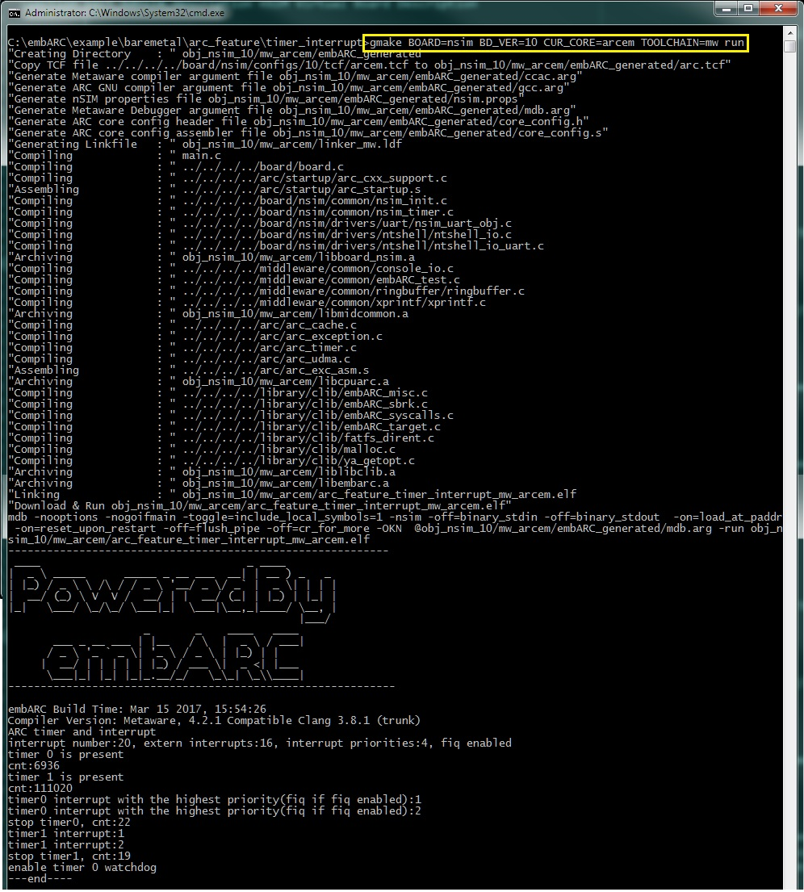

nSIM Virtual Board Description
The DesignWare® ARC® nSIM Instruction Set Simulator provides an instruction accurate processor model for the DesignWare ARC processor families. Such processor models take the software development out of your products’ critical path by enabling an early start as well as increased efficiency through enhanced visibility and control. A basic test environment for nSIM is implemented in embARC, where hostlink IO is used for message input and output. ARC related functions can be tested using nSIM such as internal timer, cache module, interrupt and exception module.
- Note
- You need to have Metaware license to install nSIM or Metaware IDE for nSIM simulation.
How to Run in embARC
For example, go to example/baremetal/arc_feature/timer_interrupt, then build this application for nSIM - 10 - arcem using metaware or arc gnu toolchain. Here are the steps for running or debugging this application in nSIM.
Run or debug application built by Metaware toolchain in nSIM
Here are the steps for Metaware toolchain, running in nSIM environment.
- Step 1: Open one command terminal in this application folder.
- Step 2: Build and run this application using this command: gmake BOARD=nsim BD_VER=10 CUR_CORE=arcem TOOLCHAIN=mw run

Timer example built by Metaware toolchain running on nSIM
Run or debug application built by ARC GNU toolchain in nSIM
If you want to run or debug embARC application using ARC GNU toolchain, you also need to install nSIM tool.
- Make sure that you have installed nSIM tool to your OS, and you can run nsimdrv command in command line.
- For running or debugging embARC application using ARC GNU toolchain, you need to run two commands in two command terminals, here take nsim-10-arcem core configuration for application example/baremetal/arc_feature/timer_interrupt.
- Step 1: Open two command terminals in this application folder.
- Step 2: Start nsim debug server using this command: make BOARD=nsim BD_VER=10 CUR_CORE=arcem TOOLCHAIN=gnu nsim
- Step 3: Run or debug this application using this command: make BOARD=nsim BD_VER=10 CUR_CORE=arcem TOOLCHAIN=gnu run
- Step 4: Exit the debug process by exiting these two commands.

Timer example built by ARC GNU toolchain running on nSIM
- Note
- Only for ARC GNU toolchain, you need to run two commands to debug or run application in nSIM.
-
Most middlewares in embARC are not available for nSIM since there is no external peripheral for nSIM.
Tools
The following tools are required for use with nSIM Virtual Board:
- DesignWare ARC nSIM — a ARC instruction set simulator provides an instruction accurate processor model for the DesignWare ARC processor families.
- MetaWare Development Toolkit — a complete solution to develop, debug and tune applications for the DesignWare ARC processors.
- ARC GNU Toolchain — an open-source development environment to run and debug applications for the DesignWare ARC processors.